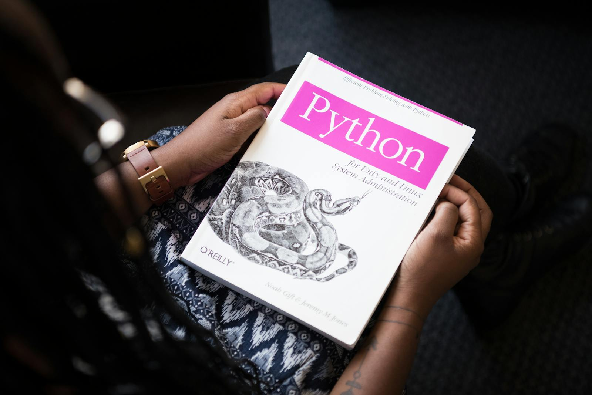
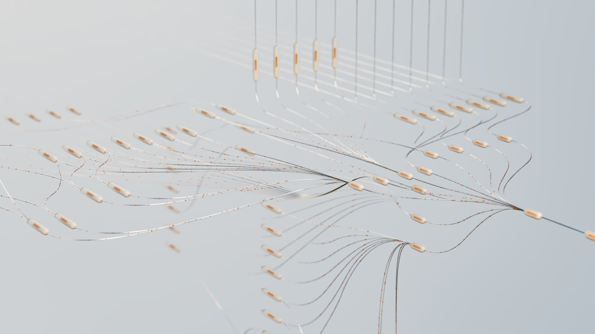

Plugins
Paquets partageables contenant skills + agents + hooks + MCP. Installation via Git ou marketplace.
La nouvelle génération d'assistant de codage en terminal par xAI
Grok n'est plus seulement un modèle. C'est maintenant une expérience complète en terminal ultra-puissante : TUI riche, agents parallèles, workflows réutilisables, intégrations externes, et bien plus.
Des paquets de prompts intelligents qui encapsulent des procédures complètes. Plus besoin de répéter les instructions à chaque fois.
Des agents enfants spécialisés qui travaillent en parallèle avec leur propre contexte et outils limités.
Phase de planification structurée obligatoire avant toute modification sur les tâches ambiguës.
Intégrez n'importe quel service externe via le protocole standard : GitHub, Linear, bases de données, Sentry, etc.


Paquets partageables contenant skills + agents + hooks + MCP. Installation via Git ou marketplace.
Intégration native dans Zed, Neovim, Emacs via le protocole Agent Client Protocol. 72 méthodes d'extension.
Lancez des serveurs, builds, tests en arrière-plan. /loop et scheduler pour tâches récurrentes.
Mode non-interactif avec sortie JSON ou streaming NDJSON. Parfait pour pipelines et scripts.
Recherchez dans l'historique de toutes vos sessions passées avec memory_search.
Interface entièrement personnalisable. Support complet Vim (j/k, folds, etc.) et configuration fine.